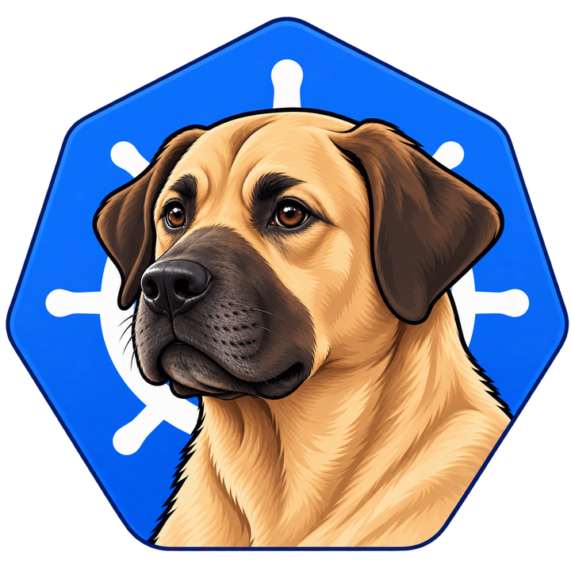

Safe, rolling upgrades for Talos Linux clusters
KangalPatch is a Kubernetes operator. Describe the upgrade in a PatchPlan and it drains, upgrades, reboots and verifies each node, group by group, within the failure limits you set.
helm install kangal-patch oci://ghcr.io/uozalp/helm/kangal-patch \
--version 0.2.0 \
--namespace kangal-patch \
--create-namespaceMIT licensed. Installs with Helm or kubectl. Version checks cover the Talos and Kubernetes support matrix for Talos 1.10 to 1.14.

Watch a rollout
A simulated auto-update: a new Talos release waits for approval in Slack, then its PatchPlan rolls out, control plane first, and reports every node in the thread. Pause the plan, or make the next node fail to see the Halt failure policy stop it.
Simulation of an auto-update to Talos v1.12.1. A Slack message announces the release with Approve release and Reject release buttons. Once two approvers have approved, a PatchPlan upgrades three control plane nodes and six worker nodes, and a reply in the Slack thread lists each node with its group, phase and time. Use the buttons below to run, pause, restart, or make the next node fail.
- Pending
- Draining
- Upgrading
- Rebooting
- Completed
- Failed
Features
Everything a Talos upgrade needs, declared in one resource and enforced by the operator.
Safe by default
- Preflight checksBlock a rollout before any node is touched: Kubernetes API readiness, Talos credentials, installer image and version support.
- Safe drainingDrains enforce PodDisruptionBudgets, with timeouts for the drain and the reboot.
- Failure budgetsHalt or pause the plan once the number of failed nodes you set is reached.
In the order you choose
- Rollout groupsPatch databases, GPU nodes, workers and control plane in your order, each group with its own concurrency.
- Maintenance windowsAllow patching only in set time windows and skip holidays with excluded dates.
- Pause, resume, cancelStep in at any time with a single
kubectl patch.
Hands-off when you want it
- Auto-updateFollow upstream Talos releases, with a minimum release age before one is used.
- Slack approval and statusApprove or reject each new release in Slack, then follow the rollout node by node in the thread of that message.
- Kubernetes upgradesPatch the kubelet, control plane static pods and kube-proxy without reboots.
- Live statusTrack every plan, group and node. Finished PatchJobs are cleaned up after a retention period.
How it works
You create one resource. The operator does the rest.
A PatchPlan declares the target versions, node selection, rollout order, safety settings and schedule. It is the only resource you create.
For every node it schedules, the operator creates a PatchJob that moves that single node through the upgrade state machine.
PatchPlan
+-- PatchJob / node-1
+-- PatchJob / node-2
+-- PatchJob / node-3
+-- PatchJob / node-4-
Select and group nodes
nodeSelectorpicks the nodes. Each one is assigned to the first matching group instrategy.order. -
Run preflight checks
The checks run once. Nothing is scheduled until they all pass.
-
Patch each node
Cordon and drain, upgrade Talos, reboot, verify. If you set a Kubernetes target, the Kubernetes components are patched and validated too.
-
Enforce your limits
Per-group concurrency, timing and failure settings apply throughout.
-
Stop when it matters
If failures pass the threshold, the plan halts or pauses according to
failurePolicy.
Every node passes through the same phases
A PatchJob tracks one node from start to finish.
- Pending
- Draining
- Upgrading
- Rebooting
- UpgradingKubernetes
- ValidatingKubernetes
- Completed
Dashed phases only run when target.kubernetesVersion is set. A job that fails ends in Failed.
Quick start
From an empty namespace to your first rolling upgrade in four steps.
- A Kubernetes cluster running Talos Linux
kubectlconfigured for the cluster- Helm 3.x for the Helm install
- Talos API client credentials: CA certificate, client certificate and key
-
Install the operator
helm install kangal-patch oci://ghcr.io/uozalp/helm/kangal-patch \ --version 0.2.0 \ --namespace kangal-patch \ --create-namespaceTwo replicas with leader election are the default. Helm installs the CRDs on first install but never upgrades them, so apply the CRDs from the GitHub Release before upgrading the chart.
# CRDs kubectl apply -k config/crd # RBAC and operator kubectl apply -k config/managerCheck that the operator and its CRDs are there:
kubectl -n kangal-patch get pods kubectl get crd patchplans.kangalpatch.ozalp.dk patchjobs.kangalpatch.ozalp.dk -
Create the Talos credentials Secret
The operator reads the Talos API credentials from a Secret in its own namespace. Values can be raw PEM or base64-encoded, as in a
talosconfigfile.CA_CERT=$(base64 -w0 < /path/to/ca.crt) CLIENT_CERT=$(base64 -w0 < /path/to/client.crt) CLIENT_KEY=$(base64 -w0 < /path/to/client.key) kubectl create secret generic talos-credentials \ --namespace kangal-patch \ --from-literal=ca.crt="$CA_CERT" \ --from-literal=tls.crt="$CLIENT_CERT" \ --from-literal=tls.key="$CLIENT_KEY"Treat this Secret as sensitive. These credentials grant full administrative access to the Talos API. Restrict access with RBAC and consider an external secret manager.
-
Create a PatchPlan
This plan upgrades the control plane first, then the workers, one node at a time.
apiVersion: kangalpatch.ozalp.dk/v1alpha1 kind: PatchPlan metadata: name: simple-upgrade spec: target: talosVersion: v1.11.6 source: factory installer: nocloud # Control plane first, then workers (this is the default order) strategy: order: [controlPlane, workers] # How many nodes of a group are patched at once groups: controlPlane: concurrency: 1 workers: concurrency: 1 # Timing delayBetweenNodes: 300s # Safety respectPDBs: true drainTimeout: 5m rebootTimeout: 10m failurePolicy: type: Halt maxFailures: 1 # Talos API talosConfig: endpoints: - 10.0.0.10:50000 secretRef: name: talos-credentials namespace: kangal-patchkubectl apply -f patchplan.yamlsource: factoryresolves the installer from Talos Image Factory and is required from Talos 1.14. Without aschematicID, each node keeps the schematic it runs today, so system extensions and kernel arguments survive the upgrade. -
Monitor progress
$ kubectl get patchplan -w NAME PHASE TALOSTARGET K8STARGET TOTAL RUNNING COMPLETED FAILED AGE simple-upgrade Completed v1.11.6 6 0 6 0 79m $ kubectl get patchjob
Recipes
Common PatchPlan settings, ready to adapt. More manifests live in config/samples.
Groups are label filters over the nodes your plan selects. They run strictly in strategy.order, and a node is patched at most once per plan: the first listed group it matches schedules it.
spec:
nodeSelector:
matchLabels:
environment: production
groups:
database:
selector:
matchLabels: {workload: database}
concurrency: 1
kafka:
selector:
matchLabels: {workload: kafka}
concurrency: 1
gpu:
selector:
matchLabels: {accelerator: nvidia}
concurrency: 2
workers: # built in, declared only to set its concurrency
concurrency: 3
strategy:
order: [database, kafka, gpu, workers, controlPlane]
failurePolicy:
type: Halt
maxFailures: 1
retention:
history: 168hPatching pauses outside the windows and on excluded dates. All times are UTC, windows may span midnight, and omitting days matches every day.
spec:
maintenance:
excludeDates: # holidays, blackout periods (YYYY-MM-DD)
- "2026-12-24"
- "2026-12-25"
- "2026-12-31"
windows: # when patching is allowed (UTC)
- days: ["Monday", "Friday"]
startTime: "01:00"
endTime: "05:00"
- days: ["Wed"]
startTime: "22:00"
endTime: "02:00" # spans midnight
- startTime: "03:00" # every day
endTime: "04:00"The plan becomes a template in the Watching phase. Every checkInterval it creates a child plan for a new upstream Talos release, so each release has its own plan and history. Omit talosVersion on templates.
spec:
target:
source: factory # required once releases reach Talos 1.14
installer: nocloud
autoUpdate:
enabled: true
allow: patch # patch (default) | minor
checkInterval: 30m # default 1h, minimum 1m
minReleaseAge: 72h # default 0sEach eligible release is announced in a Slack channel with the release notes and Approve release and Reject release buttons. The child plan is created only once enough approvers have approved, and one rejection is final. The rollout then reports its progress in the thread: one message with a table of the nodes that is edited as they move through the phases, and a separate reply when a node fails.
metadata:
name: homelab
annotations: # optional, shown as fields in the Slack message
slack.kangalpatch.ozalp.dk/environment: Home
slack.kangalpatch.ozalp.dk/cluster-name: homelab
spec:
target:
source: factory
installer: nocloud
autoUpdate:
enabled: true
minReleaseAge: 72h
approval:
slack:
enabled: true
expireAfter: 72h # optional; omitted = a pending approval never expiresThe Slack app, channel and approvers are operator settings, shared by all plans. Create the app in your workspace from config/slack/app-manifest.yaml, invite it to the channel, then give the operator its two tokens:
# Bot token (xoxb-) and app-level token (xapp-, scope connections:write)
kubectl create secret generic slack-credentials \
--namespace kangal-patch \
--from-literal=bot-token="$SLACK_BOT_TOKEN" \
--from-literal=app-token="$SLACK_APP_TOKEN"
# Channel, approvers and the number of approvals a release needs
helm upgrade kangal-patch oci://ghcr.io/uozalp/helm/kangal-patch --reuse-values \
--set slack.existingSecret=slack-credentials \
--set slack.channelID=C0123456789 \
--set 'slack.approvers={U0123456789,U0987654321}' \
--set slack.requiredApprovals=2Slack approval is newer than release 0.2.0 and needs the next release of the operator and chart. The operator connects out to Slack with Socket Mode, so it needs no public endpoint. The full setup, including kubectl, is in the Slack approval guide.
Set schematicID to change the extensions and customization of the Talos image on every node. Add secureBoot to use the secure boot installer.
spec:
target:
talosVersion: v1.12.1
source: factory
installer: aws
schematicID: 376567988ad370138ad8b2698212367b8edcb69b5fd68c80be1f2ec7d603b4ba
secureBoot: true # adds the -secureboot suffix
groups:
workers:
concurrency: 2
talosConfig:
endpoints:
- 10.0.0.10:50000
secretRef:
name: talos-credentials
namespace: kangal-patchA cancelled plan stops scheduling new nodes. PatchJobs already in progress run to completion, and setting cancelled back to false resumes the plan. To stop for good, delete the plan.
# Pause and resume
kubectl patch patchplan simple-upgrade --type merge -p '{"spec":{"paused":true}}'
kubectl patch patchplan simple-upgrade --type merge -p '{"spec":{"paused":false}}'
# Cancel
kubectl patch patchplan simple-upgrade --type merge -p '{"spec":{"cancelled":true}}'Several minor versions behind? Upgrade in stages. Talos does not reliably support skipping minor versions, and a large jump can fail silently: the node reboots into its old partition and the PatchJob waits in Rebooting. For example, go from v1.11.x to v1.13.10, then to v1.14.0, running one PatchPlan per stage.
Documentation
The full reference lives in the repository README.
make test and make lint first.